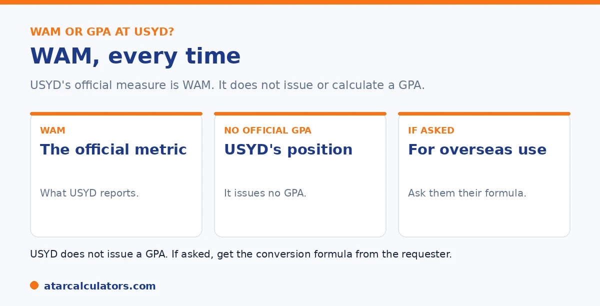

Here is the short version, and it is clear. The University of Sydney uses the WAM, or Weighted Average Mark, as its official academic measure. It does not issue or calculate a GPA. So your headline figure at Sydney is your WAM, out of 100. If an application asks for a GPA, you can estimate an unofficial one, but it is not a figure Sydney provides.
This question comes up constantly, partly because GPA is so common overseas. For Sydney, the answer is simple and definite.
Below is the full answer and what to do if you need a GPA. To estimate one, use our USYD GPA calculator.
Key takeaways
- Sydney uses the WAM, its Weighted Average Mark.
- It does not issue or calculate a GPA.
- Your headline figure at Sydney is your WAM, out of 100.
- If asked for a GPA, you can estimate an unofficial one.
- A GPA estimate is not a figure Sydney provides.
- For most purposes at Sydney, the WAM is what counts.
The clear answer: Sydney uses the WAM
Let us answer it plainly. The University of Sydney uses the WAM as its official academic measure. It does not use, issue, or calculate a GPA. So when Sydney sums up your performance, it is with your WAM.

Your WAM is the credit-weighted average of your actual marks, out of 100. That single number is your headline result at Sydney. See our guide on the Sydney grading system.
Why Sydney uses the WAM
The WAM keeps your exact marks, rather than grouping them into grade bands as a GPA does. So it gives a more precise picture of performance, which suits ranking for honours, scholarships, and prizes.
That precision is the main reason most Australian universities, Sydney included, prefer the WAM. See our guide on WAM versus GPA for the full comparison.
What if you're asked for a GPA?
Sometimes an application, often an overseas one, asks for a GPA. Since Sydney does not provide one, its own advice is to contact the organisation asking, and use their method to convert your Sydney results.
You can also estimate an unofficial GPA yourself, as a guide, by converting your marks to grade points on a standard scale. Just remember it is indicative, not official. See our guide on estimating a USYD GPA.
Need an indicative GPA estimate?
Try the USYD GPA calculator →What to focus on
For nearly everything at Sydney, your WAM is the figure that matters. It is used for honours entry, scholarships, prizes, and ranking, and it is what postgraduate programs here usually look at.
So track your WAM as your main measure. Reserve a GPA estimate for the specific situations that demand a GPA. See our guides on a good result at Sydney and the distinction average.
Knowing which measure applies where saves you from optimising the wrong number. At Sydney, the WAM is the working currency. It decides honours eligibility, ranks you for scholarships and prizes, and is what most postgraduate programs at the university assess. Because it keeps your actual marks rather than rounding them into grade bands, it is also the more sensitive gauge of your progress. So watching it through your degree tells you exactly where you stand. The GPA is the export format. It comes into its own when you deal with systems built around a grade-point scale, most obviously applications abroad, and occasionally domestic programs or scholarships that specify a GPA. The practical routine, then, is to treat your WAM as the number you manage day to day. It drives nearly everything internal. Generate a GPA only when a specific application asks for one, and calculate it on the relevant grade scale rather than trying to convert between the two. This keeps your effort pointed at what matters. The WAM rewards every mark, not only band changes. So lifting individual results, particularly in higher-credit and later-year units, moves the figure that governs your honours, prizes and postgraduate options at Sydney.
When you need a GPA for external applications
Even though USYD uses WAM, you may still need a GPA figure, most often for overseas universities or programs that ask for one. In that case, calculate an unofficial GPA from your USYD grades using the 7-point mapping, and label it clearly as an estimate.
For serious international applications, a credential service can map your USYD grades to the relevant local scale. So WAM is your USYD number, and a GPA estimate is a translation for audiences that expect one. See how to calculate it.
Common questions
Does USYD use a WAM or a GPA?
The WAM. The University of Sydney uses the Weighted Average Mark as its official academic measure and does not issue or calculate a GPA. So your headline figure at Sydney is your WAM, out of 100.
Does the University of Sydney calculate a GPA?
No. Sydney does not issue or calculate a GPA. It uses the WAM. If an application asks for a GPA, Sydney advises contacting that organisation to use their conversion method for your marks. Any GPA you work out is unofficial.
Why does Sydney use the WAM instead of a GPA?
The WAM keeps your exact marks, rather than grouping them into grade bands as a GPA does, so it gives a more precise picture. That precision suits ranking for honours, scholarships, and prizes, which is why Sydney prefers it.
What do I do if an application asks for my USYD GPA?
Since Sydney does not provide one, contact the organisation asking and use their conversion method. You can also estimate an unofficial GPA yourself by converting marks to grade points, but treat it as indicative only.
What is the main figure at USYD?
Your WAM. It is Sydney's official measure, used for honours, scholarships, prizes, and ranking, and what postgraduate programs here usually look at. So track your WAM as your main measure, and use a GPA estimate only when needed.
Estimate your USYD GPA
Get an indicative GPA from your Sydney marks and credit points. Free, and no signup.
Open the USYD GPA calculator →Related guides
This guide is general information for students, not formal academic advice. The University of Sydney's official academic metric is the WAM, and it does not issue or calculate an official GPA. Any GPA you work out is an unofficial estimate for your own use. Grade bands and honours requirements can vary by faculty and change over time, so always confirm with the University of Sydney directly. Reviewed by the ATARCalculators Editorial Team.